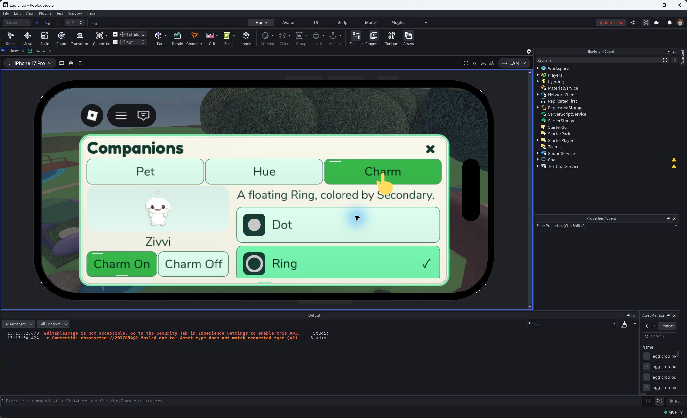
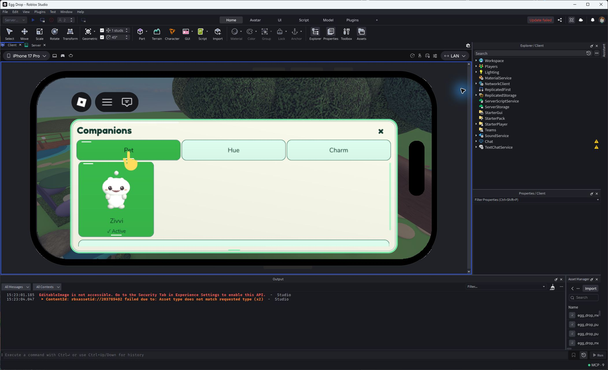
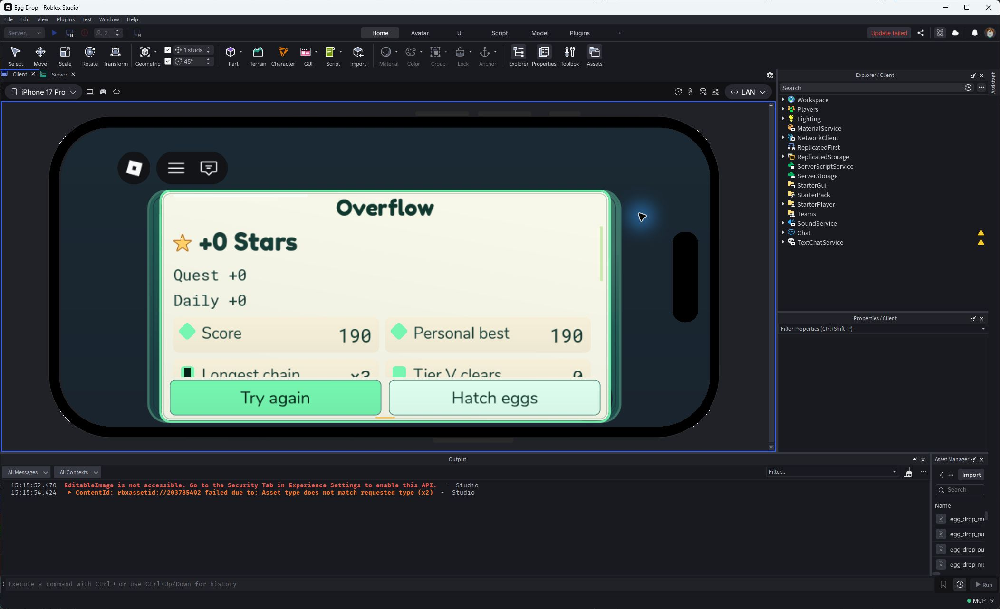
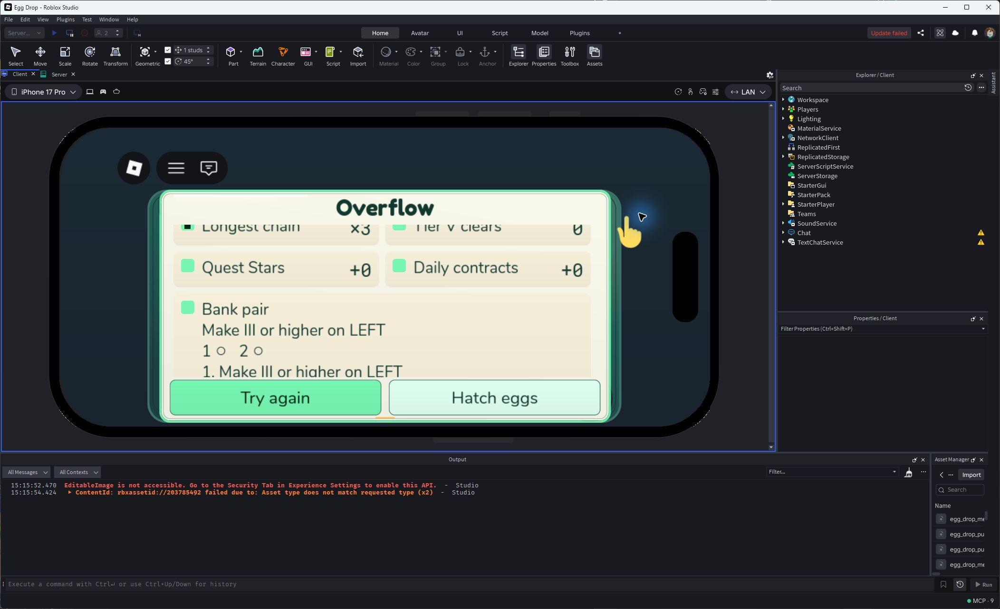
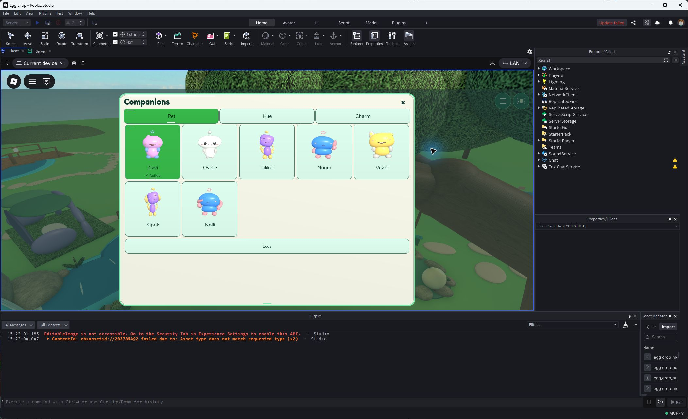
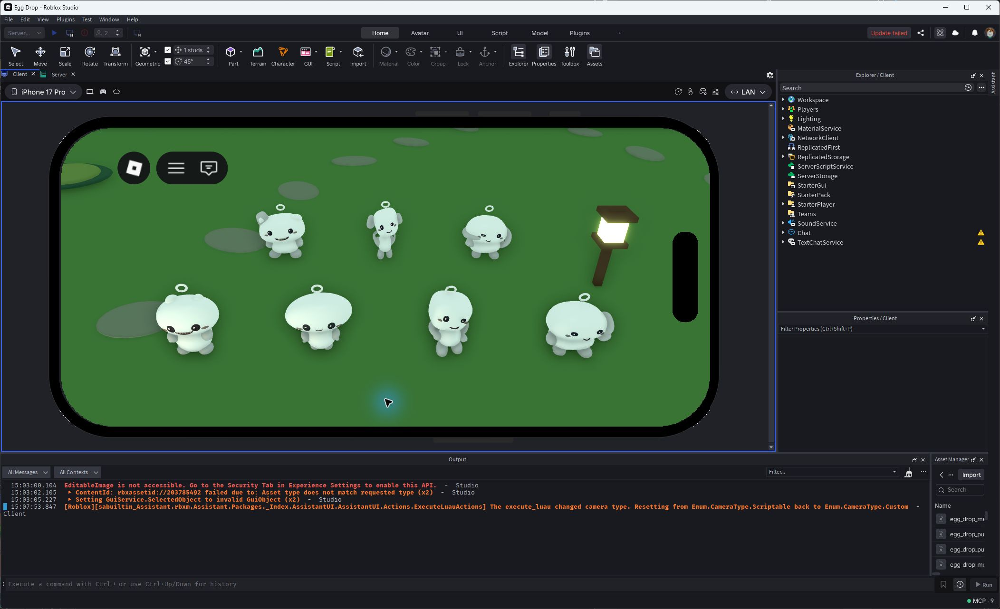
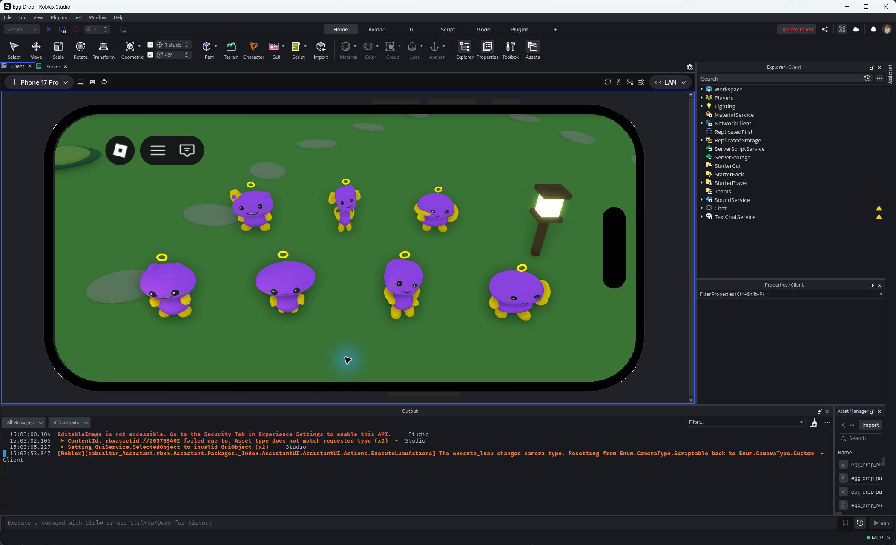

Ordinary earned Zivvi, Medium desktop: fixed live preview, independent color channels, full-width Pet / Hue / Charm tabs.

Actual machine editor at Largest text in iPhone17Pro landscape emulation. Ring saved; icons and names no longer overlap. Native phone emulation, not physical hardware.

Latest short-phone Pet layout: whole first square and textual Active marker visible.

Ordinary no-aim run overflowed. Exact zero reward, no invented currency.

Details open immediately; title and actions remain pinned.
Presentation fixtures — seeded ownership and receipts
These show possible saved appearances and a positive receipt. They did not grant these pets, hues or Stars to the player.

All seven retained saved pets. The Companion Egg still offers the active four-pet roster; retired pets remain usable for existing owners.
New emissive contribution. Dark eyes and catchlights remain separate.

All seven retained authored rigs at midnight; true continuous mesh Rings.

Same scene with mixed Main and Secondary channels. Stronger charm glow, no global lighting change.
Physical-phone performance, live save/rejoin, live visitor carry and human fun/retention remain open. All QA objects removed before private publication.